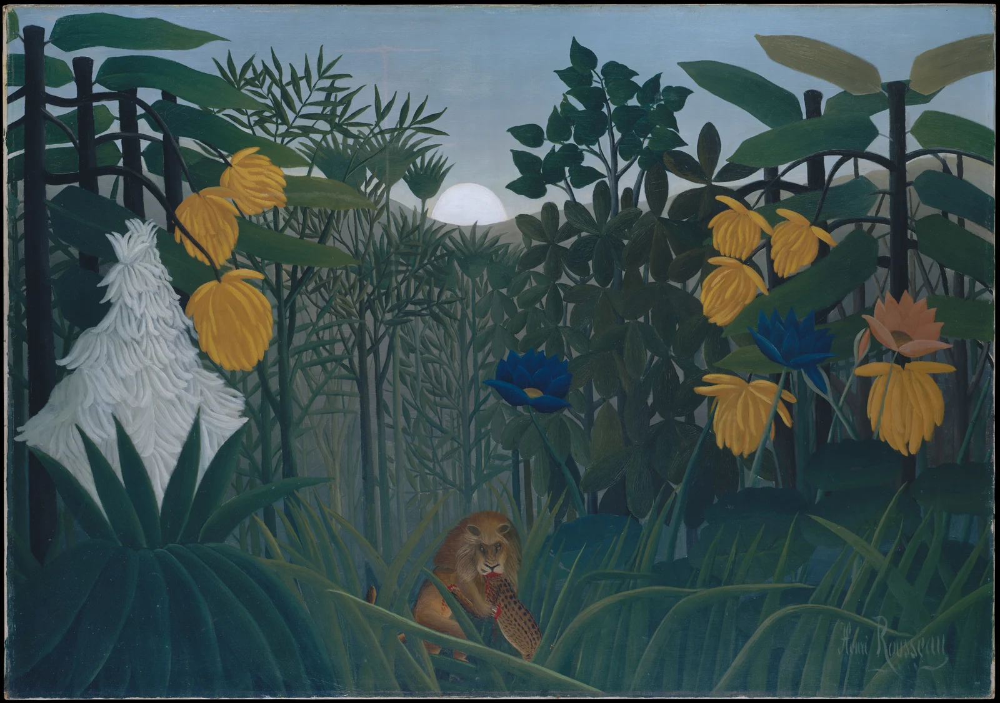

绿意深处，有一丝不安
花朵大得像树，狮子小得像秘密。先被美吸引，再发现它并不温柔。

馆藏事实：113.7 × 160 厘米；馆藏编号 51.112.5。作品、年代、媒材与作者背景依据馆藏记录；以下视觉解读及练习为每日艺术的分析。 馆藏记录
构图｜让主角迟一点出现
不妨先找狮子：它在画面下部，尺度远小于两侧的巨花。左右高大的茎干像侧幕，把视线引向中间的浅色天空；视线再沿细密竖茎向下，才撞见捕食。前景长叶横斜着盖住动物的一部分，遮挡建立深度，也延缓了叙事。主角并不靠占满画面赢得注意，而靠被发现的那一刻。
色彩｜一片绿色，也能有远近
蓝绿、深绿与橄榄绿形成类似色骨架；黄花在其中偏暖、偏亮，深蓝花则在色相上拉开距离。黄橙与蓝构成局部近互补关系，但并非整幅画都靠互补色运转。灰蓝天空与近黑的茎干提供明度跨度，让密集植物仍能分层。狮子口边极少的红色又与绿形成局部对照：面积很小，叙事重量却很大。
光影｜亮着，却没有明确的时刻
地平线上的浅色圆盘没有把一束强光投到狮子身上。叶片虽有明暗转折，整体仍像一层层铺开的剪影。这里最有力的光影关系，是亮天空托起暗轮廓、白花从绿底跃出。仅凭这张图，不必把圆盘武断认作月亮，也不必替它指定清晨或黄昏；这种悬而未决的光感，反而让森林脱离日常时间。
技法｜叶片像字，一笔笔组成森林
馆藏确认媒材为布面油画。就图像观察而言，叶缘清楚，叶脉以反复线条组织，植物形状重复却不完全相同。空间主要靠前后覆盖与尺度差展开，不靠连续、可信的远景透视。细部被认真描绘，整体却像精心搭建的舞台；这不是对颜料层次或底稿工序的技术鉴定。
作者｜在城市里想象丛林
卢梭是法国画家（1844–1910），曾任关税职员。馆方说明，他以巴黎植物园的观察发展丛林植物形象，动物形象则取材于当时的民族志刊物与儿童图画书。因而，眼前的丛林应被理解为重组的想象，而非一次热带写生的记录。
为何动人｜美没有替危险让路
我最在意的是，捕食发生了，花仍然开得端正。我们先享受装饰性的秩序，随后才意识到这片秩序容纳着暴力。那种不安不是来自夸张动作，而是来自画面没有随事件一起惊叫。再看一遍，绿色便不只是治愈色了。
可以借用｜把发现留给第二眼
做一张植物主题海报：用约 70% 的深绿 #234A43 做大形，20% 的灰蓝 #8FA7B1 留呼吸区，10% 的赭黄 #B7953D 点亮重点。让细线、宽叶两种尺度交替，把关键小物放在下部并局部遮挡。先看灰度能否分层，再添一小点红。以上为独立练习方案，色值是近似参考，比例不是原作面积统计。